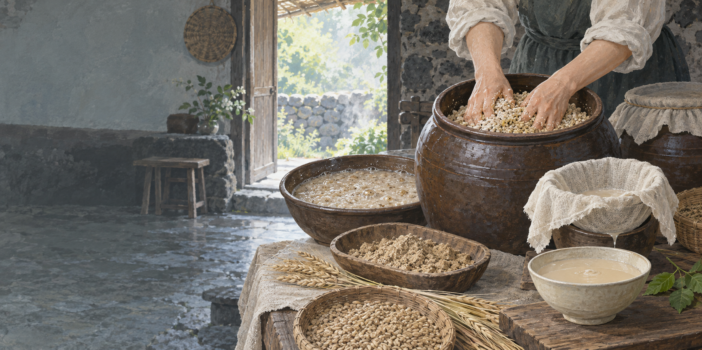

전분이 단맛으로
누룩의 효소가 긴 전분을 더 작은 당으로 쪼개 밥에서 단맛이 납니다.
 제주에서는 이 재료를
제주에서는 이 재료를
보리밥과 누룩의 발효 과정을 바탕으로 제작한 기록화 · 생성 이미지
쉰다리는 남은 보리밥이나 쌀밥에 물과 누룩을 넣어 따뜻하게 발효한 제주 음료입니다. ‘쉰’이라는 말 때문에 상한 밥처럼 들리지만, 아무렇게나 변한 밥과 의도한 발효는 다릅니다.
누룩의 미생물과 효소가 밥의 전분을 당으로 바꾸고, 이어지는 발효가 산미와 향을 만듭니다. 집에 따라 걸러 마시거나 끓이고, 설탕이나 꿀로 단맛을 조절했습니다.
덥고 습한 여름, 냉장 시설이 없던 부엌에서 지은 밥은 오래 두기 어려웠습니다. 쌀이 귀하고 보리밥을 널리 먹던 제주에서 남은 밥을 누룩 발효로 전환하는 일은 낭비를 줄이는 생활 기술이었습니다.
오염되거나 부패한 밥이 아니라 먹을 수 있는 상태의 밥을 사용합니다.
밥알이 풀릴 만큼 물을 붓고 잘게 부순 누룩을 섞습니다.
가정마다 다른 시간 동안 기포와 향, 신맛의 변화를 살핍니다.
누룩 찌꺼기를 거르고 필요하면 끓여 발효를 멈춥니다.
누룩의 효소가 긴 전분을 더 작은 당으로 쪼개 밥에서 단맛이 납니다.
여러 미생물의 활동으로 유기산과 향이 생겨 시크무레한 맛이 더해집니다.
보리밥·쌀밥, 누룩의 종류, 온도와 시간, 끓임 여부에 따라 맛이 달라집니다.
깨끗한 재료·용기, 정해 둔 시간과 온도
출처 불명 재료, 장시간 방치, 교차오염
예상한 새콤한 향과 고른 기포
부패취, 이상한 색, 솜털 같은 곰팡이, 끈적한 점액
검증된 조리법을 따르고 완성 뒤 냉장
의심되면 맛보지 말고 전량 폐기
가정의 구술은 중요한 기록이지만 안전 기준을 대신하지 않습니다. 손과 용기를 세척·소독하고, 신선한 밥과 식용 누룩을 쓰며, 발효 온도와 시간을 계량하고, 완성 후에는 냉장 보관합니다.
임신부·고령자·영유아·면역저하자는 비가열 자가발효 음료를 피하는 편이 안전합니다. 이상 냄새나 곰팡이, 용기 팽창 등 의심 신호가 있으면 마시지 않습니다.
재료와 전통 제조법은 제주 공공자료를 바탕으로 정리하고, 안전 수칙은 보수적으로 제시했습니다.